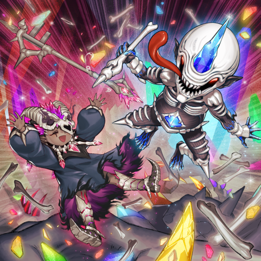

What is Mementotlan? And furthermore what is Yu-Gi-Oh?
Mementotlan is the archetype I play in my current favorite collectable card game, Yu-gi-oh. Yu-gi-oh is a card game in which you play against an opponent and attempt to reduce their life points to zero before they can do the same to you. Modern Yu-gi-oh has evolved past its roots of summoning big monsters and crushing your opponent with them into a complex series of combos, interaction archetypes, and matchups. Unlike other card games, Yu-gi-oh lacks a traditional resource mechanic so to keep decks different i.e. not just all the best cards Konami, the company behind Yu-gi-oh, uses archetypes or a large series of cards that refer to each other or otherwise have synergies with each other to keep decks different.
Mementotlan Design
The Mementotlan monsters all pay homage to classic Yu-gi-oh Normal monsters from the days of old, but now retrained and given powerful effects. The name, Mementotlan, pays homage to that fact with Mementos refrering to reminders of the departed. The -tlan suffix inturn refers to the Aztec underworld Mictlan further being reinforced by the archetype's field spell being called "Mementomictlan".
So what makes Mementotlan a Unique Deck?
The Mementotlan cards were first released in 2023's Valiant Smasher expansion and are a series of monsters that have interactions with the graveyard. Their main game plan is to fill the graveyard with differently named Mementotlan monsters in order to summon their boss monster, Mementotlan Combined Creation a massive monster with 5000 attack and defense points. From there the deck has cards that allow you to protect it and disrupt the opponent until you have the opportunity to attack you opponent for massive damage. To get there Mementotlan uses fusion monsters, and a series of main deck effect monsters allowing for multiple paths to victory to account for variance in your starting hand, as well as interruptions from your opponent.
Check out more about how the deck plays on the Combos page